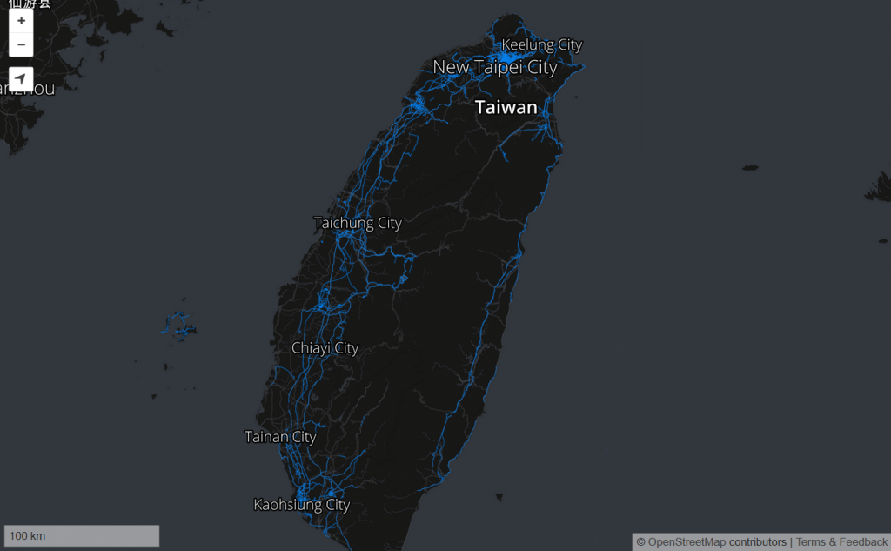

「Mozilla Stumbler」是群眾外包 (Crowd-sourcing) 的開放源碼無線網路掃瞄器，可協助同樣是群眾外包的定位資料庫「Mozilla Location Service (MLS)」蒐集 GPS 資料。我們剛於 Google Play 商店釋出 1.0 版本，可讓使用者輕鬆安裝 Mozilla Stumbler 並隨時更新。如果你比較愛用 f-droid 版本，也可以到 f-droid 上取得 Mozilla Stumbler。
隨著你在大街小巷穿梭，此 App 也會不斷「絆到」新的 Wi-Fi 網路與基地台。Mozilla Location Service 可整合無線網路資訊而提供地理定位服務，並透過 Firefox OS 的地圖與「Find My Device」來顯示你的位置。在你的 Android 裝置上，Stumbler 將透過本身的地圖畫面來顯示資料庫的圖資 (以藍點顯示)，並讓使用者得知接下來將行經的街道名稱。可前往 Mozilla 的專案頁面進一步了解。

該如何使用 Mozilla Stumbler
- 前往尚未揭露過的區域 (未覆蓋藍色) 以豐富地圖資訊。
- 每天都帶著 Mozilla Stumbler 走路、騎車、開車行經不同的路線。
- 先從主要街道與路口開始，再逐步探索小路或旁支巷弄。但請注意自身安全，避開陰暗的角落。
- 你所貢獻的圖資需時一天才會更新到地圖中。
- 當裝置的電力偏低時，App 將自動停止運作。
如果有多個貢獻者想一決高下，也可以在 Stumbler 的「設定 (Settings)」中輸入自己喜歡的暱稱，並透過排行榜追蹤他人的進度。週排行榜的變化可是非常劇烈的。而新加入的貢獻者可自行探索新的區域，設法回報尚無人發現的無線網路，因此也有機會跳上週排行榜的前幾名。
為了避免行動電話的資料傳輸量暴增，Stumbler 只會在連上可用的 Wi-Fi 網路時，才會顯示高解析度的地圖。如果你只要看高解析度的地圖，可逕行更改 Stumbler 的「開發者設定 (Developer Settings)」。
你可透過 GitHub bug tracker，或 Mozilla 的 IRC 伺服器「#geo」頻道上回報錯誤。Mozilla Stumbler 是開放源碼，當然可到 GitHub 上取得程式碼。
原文連結：Mozilla Stumbler 1.0 geolocation crowd-sourcing app now in Google Play Store